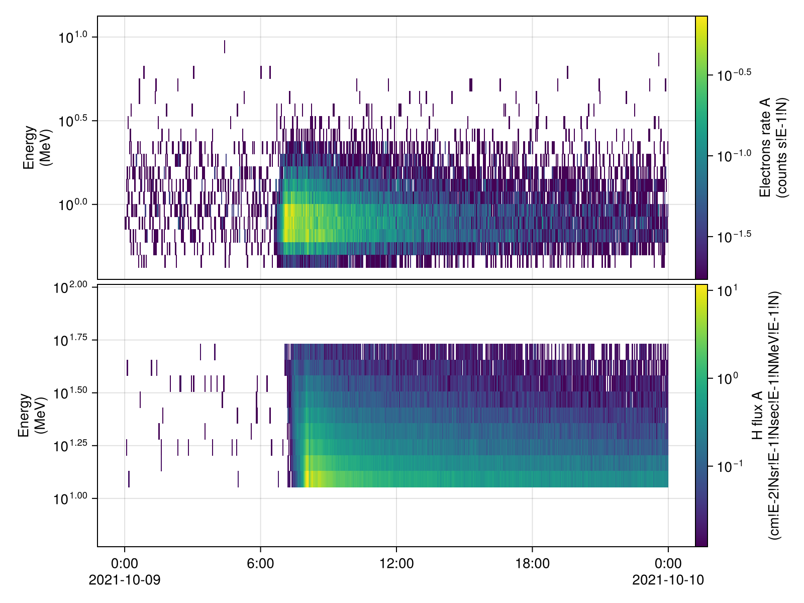
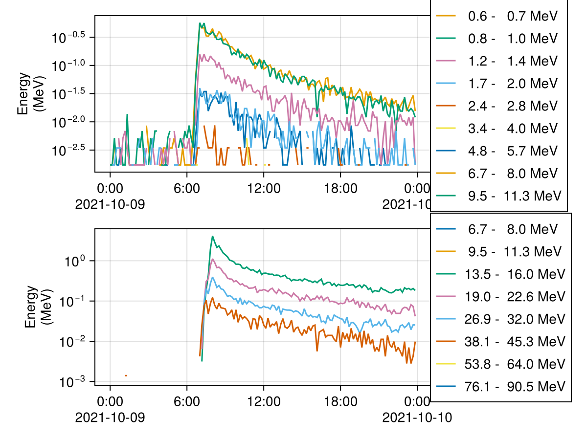

Parker Solar Probe (PSP)
Overview
Energetic particle data come from the Integrated Science Investigation of the Sun (ISOIS) instrument suite aboard the Parker Solar Probe spacecraft.
References
- PSP Mission: Parker Solar Probe
- ISOIS Instrument: Integrated Science Investigation of the Sun
- Data Access: CDAWeb through CDAWeb.jl
Basic Usage
List PSP ISOIS datasets:
using CDAWeb
get_datasets("PSP", "ISOIS")17 CDAWeb datasets:
PSP_ISOIS-EPIHI_L2-HET-RATES10 2018-09-28..2026-06-13 Parker Solar Probe ISOIS EPI-Hi Level 2 HET 10-second Rates
PSP_ISOIS-EPIHI_L2-HET-RATES300 2018-09-28..2026-06-27 Parker Solar Probe ISOIS EPI-Hi Level 2 HET 5-minute Rates
PSP_ISOIS-EPIHI_L2-HET-RATES3600 2018-09-28..2026-06-27 Parker Solar Probe ISOIS EPI-Hi Level 2 HET Hourly Rates
PSP_ISOIS-EPIHI_L2-HET-RATES60 2018-09-28..2026-06-27 Parker Solar Probe ISOIS EPI-Hi Level 2 HET 1-minute Rates
PSP_ISOIS-EPIHI_L2-LET1-RATES10 2018-09-28..2026-06-13 Parker Solar Probe ISOIS EPI-Hi Level 2 LET1 10-second Rates
PSP_ISOIS-EPIHI_L2-LET1-RATES300 2018-09-28..2026-06-27 Parker Solar Probe ISOIS EPI-Hi Level 2 LET1 5-minute Rates
PSP_ISOIS-EPIHI_L2-LET1-RATES3600 2018-09-28..2026-06-27 Parker Solar Probe ISOIS EPI-Hi Level 2 LET1 Hourly Rates
PSP_ISOIS-EPIHI_L2-LET1-RATES60 2018-09-28..2026-06-27 Parker Solar Probe ISOIS EPI-Hi Level 2 LET1 1-minute Rates
PSP_ISOIS-EPIHI_L2-LET2-RATES10 2018-09-28..2026-06-13 Parker Solar Probe ISOIS EPI-Hi Level 2 LET2 10-second Rates
PSP_ISOIS-EPIHI_L2-LET2-RATES300 2018-09-28..2026-06-27 Parker Solar Probe ISOIS EPI-Hi Level 2 LET2 5-minute Rates
PSP_ISOIS-EPIHI_L2-LET2-RATES3600 2018-09-28..2026-06-27 Parker Solar Probe ISOIS EPI-Hi Level 2 LET2 Hourly Rates
PSP_ISOIS-EPIHI_L2-LET2-RATES60 2018-09-28..2026-06-27 Parker Solar Probe ISOIS EPI-Hi Level 2 LET2 1-minute Rates
PSP_ISOIS-EPIHI_L2-SECOND-RATES 2018-09-28..2026-06-13 Parker Solar Probe ISOIS EPI-Hi Level 2 one-second Rates
PSP_ISOIS-EPILO_L2-IC 2018-09-28..2026-06-27 Parker Solar Probe ISOIS EPI-Lo Level 2 Ion Composition
PSP_ISOIS-EPILO_L2-PE 2018-09-28..2026-06-27 Parker Solar Probe ISOIS EPI-Lo Level 2 Particle Energy
PSP_ISOIS_L2-EPHEM 2018-09-28..2026-06-28 Parker Solar Probe ISOIS Level 2 ephem
PSP_ISOIS_L2-SUMMARY 2018-09-28..2026-06-27 Parker Solar Probe ISOIS level 2 summaryLoad EPI-Hi HET proton fluxes and electron rates of the A side:
het = cda"PSP_ISOIS-EPIHI_L2-HET-RATES60"
tmin, tmax = "2021-10-09", "2021-10-10"
H = het["A_H_Flux"](tmin, tmax)
e = het["A_Electrons_Rate"](tmin, tmax)A_Electrons_Rate (19 × 1440) dims=Electrons_ENERGY × Epoch [Electrons count rate side A; counts s!E-1!N]Channel energies and labels ride on the channel dimension:
getdim(H, 1)H_ENERGY (15) dims=? [Energy Bins for H; MeV]Time Series
using SpacePhysicsMakie, CairoMakie
tplot([e, H])
Every other channel, averaged over 10 minutes:
using TimeseriesUtilities, Dates
using SpaceDataModel: DataVariable
# indexing a file variable gives a plain array; a `DataVariable` keeps times and coordinates
# zeros cannot show on log axes
f = Figure()
linesplot(f[1, 1], replace(tmean(DataVariable(e)[1:2:end, :], Minute(10)), 0 => NaN))
linesplot(f[2, 1], replace(tmean(DataVariable(H)[1:2:end, :], Minute(10)), 0 => NaN))
f